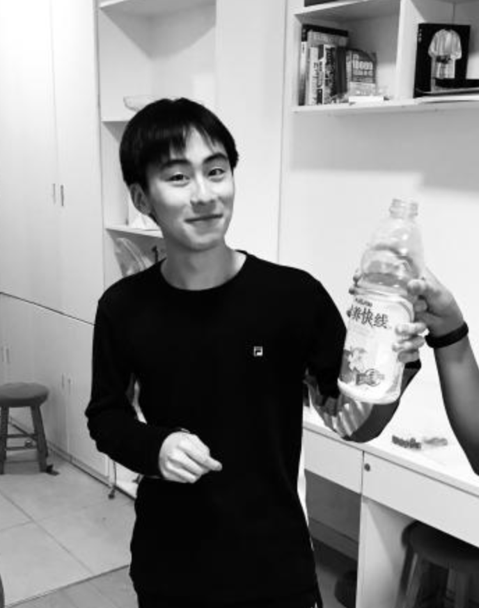

Brief Introduction
I’m Titus Weng (Tiduo Weng), an international student from China at Bucknell University studying Computer Science. I’m interested in real-time systems that combine computer vision, graphics, and XR.
About Me
I’m pretty straightforward: I like learning by building things and then fixing what doesn’t feel right. If something is “almost working,” I usually want to understand what’s actually happening.
Recently I’ve been spending time on projects around computer vision, interactive graphics, and XR, and I’m especially drawn to work that feels responsive and practical.
10 Things Outside of Academics
- I was born in China, then transferred to a U.S. high school in 10th grade and lived with my aunt’s family and my cousins.
- I switch between Chinese and English all the time depending on who I’m talking to.
- I’m a little obsessive about cleanliness and order. If I see dust on my desk, I’ll clean it before I can really start working.
- I can spend hours tweaking my computer settings and setup until everything feels “just right.”
- When my computer acts up, I usually troubleshoot and fix it myself step by step.
- I’m a dog person.
- I like trying new ways to interact with devices, like keyboard and mouse, controller, and VR.
- I’m interested in philosophy and how different traditions explain similar ideas in their own language.
- I’m learning fingerstyle guitar.
- I try to eat fruit regularly.